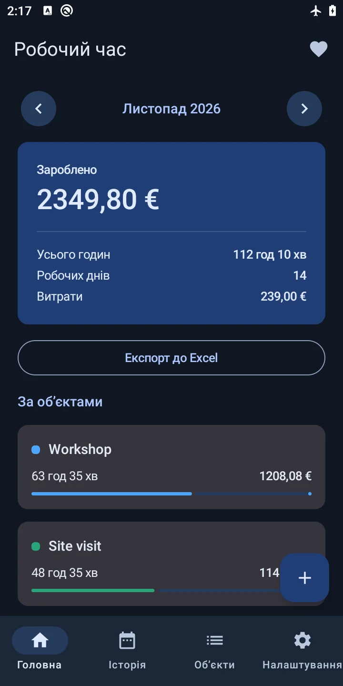
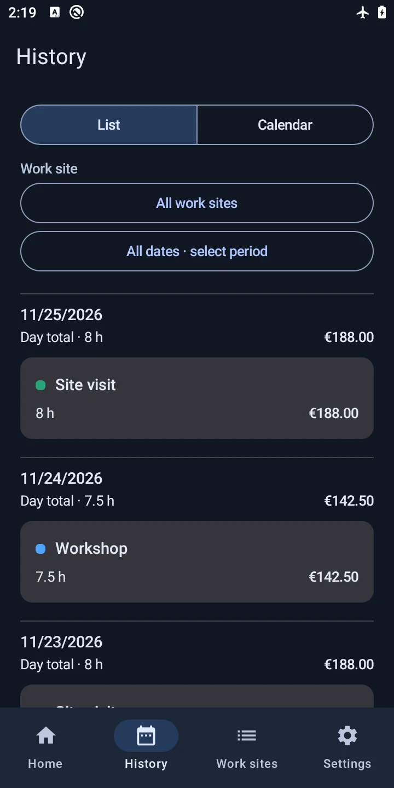
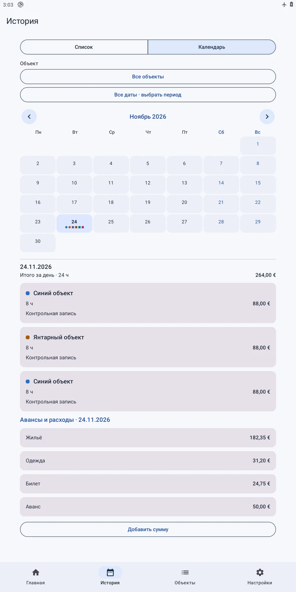
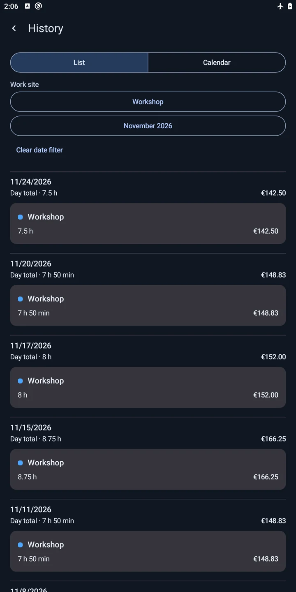

Робочі зміни
Укажіть час початку й закінчення або введіть тривалість вручну. Обідню перерву можна налаштувати окремо для кожного об’єкта.
Записуйте зміни, враховуйте обідні перерви й ставки за об’єктами. Переглядайте підсумки за вибраний період і вивантажуйте звіти в Excel.
Завантажити для AndroidВідомості про версію наразі недоступні.

Укажіть час початку й закінчення або введіть тривалість вручну. Обідню перерву можна налаштувати окремо для кожного об’єкта.
Призначайте об’єктам кольори та погодинні ставки й архівуйте завершені об’єкти. У попередніх записах лишається ставка, за якою розраховано зміну.
Знаходьте зміни в календарі й історії, переглядайте статистику за об’єктами й підсумки за вибраний період.
Ведіть облік авансів, квитків, одягу й житла окремо від заробітку.
Вибирайте мову звіту окремо від мови застосунку. Доступні українська, естонська, англійська й російська.
Зберігайте й відновлюйте дані з файлу. Робочі записи зберігаються на пристрої. Є світла й темна теми.
 Запис зміни
Запис зміни Робочі об’єкти
Робочі об’єкти
Історія змін
Календар
Статистика Експорт в Excel
Експорт в Excel Налаштування
Налаштування Вибір мови
Вибір мовиЗнімки застосунку з демонстраційними даними. Мова деяких екранів може відрізнятися.
Android може показати попередження, бо APK встановлюється поза Google Play. Завантажуйте файл з офіційної сторінки випусків, звіряйте SHA‑256 і залишайте системний захист увімкненим.
Встановлення на AndroidДля «Робочого часу» обліковий запис не потрібен. Зміни, розрахунки, звіти Excel та резервні копії працюють офлайн. Інтернет потрібен для ручної перевірки оновлення, завантаження APK або відкриття зовнішньої сторінки.
APK поширюється через GitHub Releases. Android може запитати дозвіл для браузера або файлового менеджера, з якого відкривається файл.
Створіть резервну копію в налаштуваннях, перенесіть її на новий телефон і відновіть у застосунку.
Усі функції застосунку безкоштовні. Добровільна підтримка через JoolPay допомагає розвивати проєкт. Дякуємо, що користуєтеся застосунком.